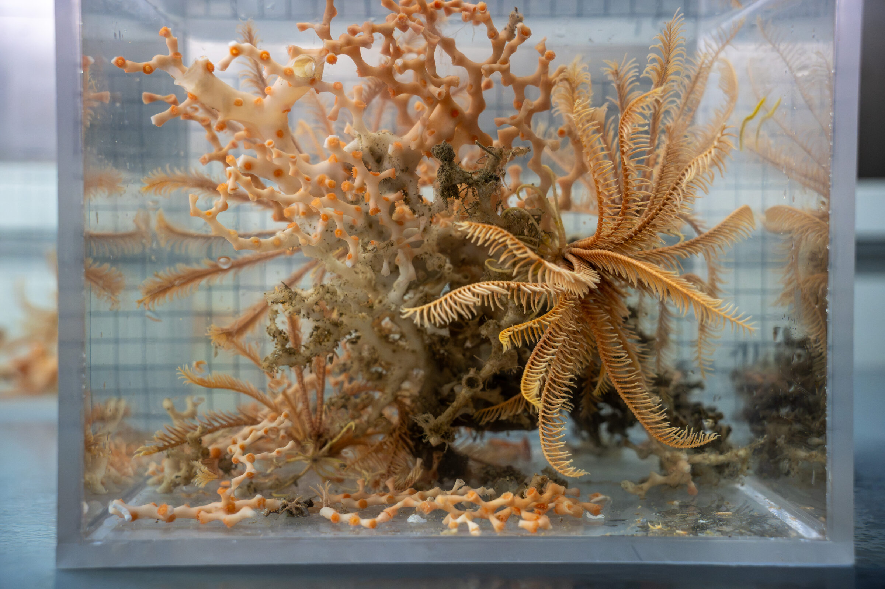
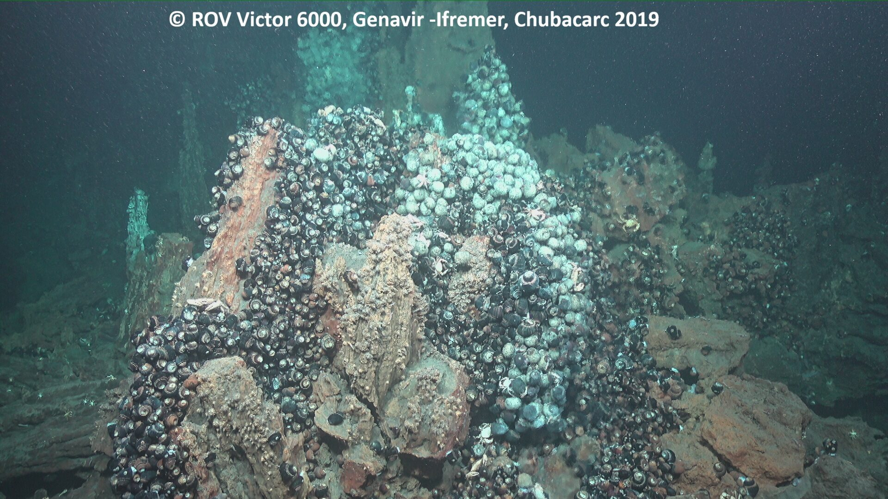
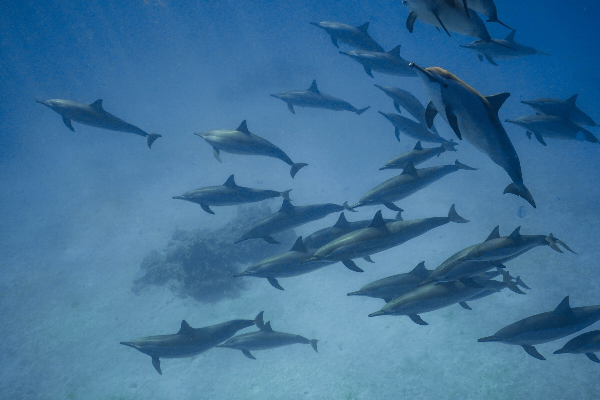

01
- Highlighting the lack of knowledge about Cryptic diversity and speciation continuum in stony Cold-water Corals.
- Phylogeography of Lophelia pertusa/Desmophyllum pertusum accros Atlantic Ocean and Mediterranean Sea.
- Assessing clonality in Cold-Water Corals.
Cold-water coral genomics
- Highlighting the lack of knowledge about Cryptic diversity and speciation continuum in stony Cold-water Corals.
- Phylogeography of Lophelia pertusa/Desmophyllum pertusum accros Atlantic Ocean and Mediterranean Sea.
- Assessing clonality in Cold-Water Corals.

02
- Comparative population genomics of the hydrothermal vent fauna from the southwest Pacific
- PhD thesis focusing on understanding patterns of genetic diversity among main species forming the ecosystems of hydrothermal vents of the western Pacific.
hydrothermal vent fauna
- Comparative population genomics of the hydrothermal vent fauna from the southwest Pacific
- PhD thesis focusing on understanding patterns of genetic diversity among main species forming the ecosystems of hydrothermal vents of the western Pacific.

03
- Demographic history around Australia for the indo-pacifique bottlenose dolphins (T. aduncus) (Marfurt et al., 2026)
- Speciation history among Tursiops dolphins around Australia (Autosomes, mtDNA and X/Y chromosomes)
- Population Genomics of the Australia Humpback dolphins in the Northwest Australia
- Genetic connectivity of Pongo using Chromosome 21.
Dolphins & Orangutans
- Demographic history around Australia for the indo-pacifique bottlenose dolphins (T. aduncus) (Marfurt et al., 2026)
- Speciation history among Tursiops dolphins around Australia (Autosomes, mtDNA and X/Y chromosomes)
- Population Genomics of the Australia Humpback dolphins in the Northwest Australia
- Genetic connectivity of Pongo using Chromosome 21.

↗